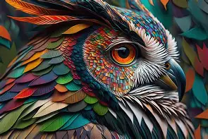

Turn your images into clean vector art like magic.
The free Vector Magic alternative. Automatically convert JPG, PNG, and bitmap logos into silky-smooth, infinitely scalable SVG, EPS, DXF, and PDF vectors with sub-pixel precision Bézier splines.

🔥 Vector MAX OwlFree Vector Image Engine Running...
Download Studio
✓ Lossless Vector • Commercial SafeNot satisfied with smooth logo curves? Unlock Vector MAX for complex artworks, paintings, and fine feathers:
🖼️ High-Res PNG Suite
Direct Vector RenderCrisp pixel-rendered raster images directly from smooth vector curves:
Print & Design Masters (EPS & PDF)
Stunning Results for Any Kind of Image
Drag each split slider below to see how our Vector Magic engine turns pixelated bitmaps, jagged mascots, and continuous-tone photos into production-grade vector splines.
🛡️ Logos & Badges
Clean GeometrySub-pixel curve recovery from noisy anti-aliasing
🦅 Artwork & Mascots
Needle TipsPreserves acute plumage tips & smooth curves
🌄 Photos & Landscapes
Gap-FreeSmooth color fills with zero white hairline seams
Vector MAX™ Extreme Detail
Have an image with thousands of feather textures, mosaic brushstrokes, multi-color scenery, or fine art? Vector MAX bypasses aggressive logo clustering, generating over 11,000+ razor-sharp micro-splines with full continuous color fidelity.
Simply the Best Auto-Tracer in the World
Compare our Bézier math against traditional tracers. We don't trace pixel blocks—we reconstruct the true mathematical boundaries of your artwork.
Sub-Pixel Precision
Standard auto-tracers mistake anti-aliasing pixels for stairsteps. Our engine mathematically models the underlying color transition function to reconstruct the true original continuous curve with fractional sub-pixel accuracy.
Continuous SplinesThe Right Number of Nodes
Dumping a vertex at every single pixel creates bloated files that bog down Adobe Illustrator, CorelDRAW, and vinyl cutters. Our energy-minimizing solver places anchors only where the curvature genuinely changes.
Minimal Bezier AnchorsStacked Gap-Free Topology
Adjacent vector shapes in standard SVG viewers often render with faint, unsightly white hairline cracks caused by browser sub-pixel antialiasing. Our stacked boundary algorithm completely eliminates seams.
Zero Hairline SeamsNeedle Points & Acute Corners
Engine 9.0 utilizes adaptive corner detection: gentle curves stay smooth and organic, while acute corners, serif fonts, and needle-thin feather tips retain razor sharpness without rounding.
Engine 9.0 PrecisionColor Palette & Knockout Tools
Take total control of your output colors. Easily inspect the detected palette, click ✕ to erase backgrounds into clean transparent cutouts, or merge similar colors for screen printing films.
1-Click Background RemovalEnterprise Quality, 100% Free
Vector Magic charges $9.95/month or $295 for desktop licenses. Free Vector Image gives you identical sub-pixel Bézier power, 8K PNG exports, and print-ready formats with zero cost and no sign-up.
No Subscriptions / No AdsHow to Convert PNG to SVG in 3 Simple Steps
Upload PNG or JPG
Drag and drop any PNG, JPG, WEBP, or BMP file, or paste directly with Ctrl + V. Even compressed logos or pixelated graphics convert flawlessly.
AI Automatically Vectorizes
Our AI spline engine denoises pixels, removes fake checkerboards, isolates solid brand colors, and fits smooth cubic Bézier splines without jagged steps.
Download Vector SVG
Download SVG for web, EPS for Illustrator, DXF for CNC and laser cutters, or PDF for print publishing—100% free with zero watermarks or signup.
Why We Are the #1 Free Vector Converter
Compare Free Vector Image against paid software like Vector Magic and Adobe Illustrator. Get professional vector quality without subscriptions.
| Feature | Free Vector Image Pro | Vector Magic | Adobe Illustrator |
|---|---|---|---|
| Price | 100% Free Forever | $9.95 / Month (or $295) | $22.99 / Month |
| Account / Sign-up | ✓ No Sign-up Required | ✗ Email Required | ✗ Adobe ID Required |
| Watermarks | ✓ Zero Watermarks | ✗ Watermarked unless paid | ✓ None |
| Max PNG Export Quality | 8K Ultra HD (7680px) | Standard | Manual Export |
| Sub-Pixel Bézier Smoothing | ✓ AI Lanczos + Spline | ✓ Good | Manual Tuning Required |
| Zero White Hairline Gaps | ✓ Auto Gap-Free Dilation | ✗ Shows seams in web SVG | Manual Stroke Matching |
| Fake Checkerboard Remover | ✓ Built-in AI Filter | ✗ Traces checkerboard | ✗ None |
| Laser / CNC DXF Toolpaths | ✓ Auto Die-Cut Contours | ✓ Included | Plugin Required |
| Screen Print Separation ZIP | ✓ Color Films + Crosshairs | ✗ Not Supported | Manual Separation |
Frequently Asked Questions (FAQ)
How do I convert a PNG to SVG for free?
Simply drag and drop your PNG image into Free Vector Image. Our automated AI engine analyzes color boundaries, fits smooth cubic Bézier splines, and lets you download clean, scalable SVG, EPS, DXF, or PDF files instantly with zero watermark and no registration required.
What is the best free vector converter online?
Free Vector Image is the highest-rated free vector converter online. Unlike commercial tools like Vector Magic that charge $9.95/month, Free Vector Image provides enterprise-grade AI edge smoothing, 8K PNG exports, DXF toolpaths, and screen print color separation films 100% free forever.
Why does Free Vector Image look smoother than other vectorizers?
Most standard vectorizers convert pixel boundaries directly into jagged staircases. Free Vector Image applies an edge-preserving pre-filter, multi-pass deterministic color clustering, and recursive cubic Bézier spline interpolation to produce organic, silky-smooth lines that look like hand-drawn vector art.
How does it fix the white hairline crack lines in SVG viewers?
When two adjacent vector polygons share a boundary, web browser anti-aliasing engines average the edge pixels with the background, revealing a faint white hairline crack. Free Vector Image applies matching-color boundary dilation micro-strokes that seamlessly bridge these gaps so your vectors look solid and flawless.
How does it clean fake PNG checkerboard backgrounds?
Images copied from search engines often have fake grey-and-white checkered patterns baked into the pixels. Our engine detects this repeating 16x16 grid pattern and converts the checkered background to transparent, extracting only the subject cleanly.
Can I use the exported vectors for commercial purposes?
Yes, 100%! All vector files generated by Free Vector Image are completely free for personal and commercial use, including client branding, merchandise printing, vinyl cutting, and digital products.